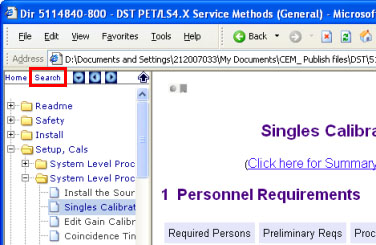
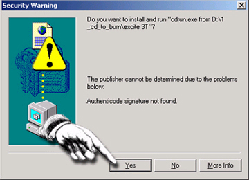
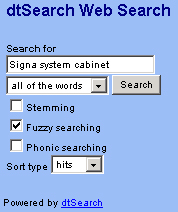
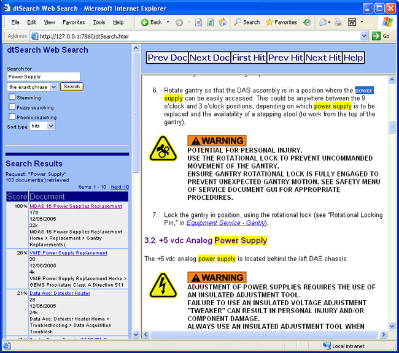

Operating Documentation
Direction 5440001-3, Rev# 6
Signa HDxt Service Methods
Module Version 1.0, Version Date 4/17/07
Operating Documentation |
| Last Revised: | February 17, 2006 |
| NOTE: | The dtSearch tool only works on Windows Operating Systems (OS). |
To start the dtSearch engine, click [Search] on the top navigation bar.
| NOTE: | If no Search tool is available for the publication, the [Search] button is inactive or you may see a blank pop-up window when you select the button. |

A File Download message box appears. The message/choices displayed depend on your PC's operating system and settings. Depending on your PC, select: [Open], [Run], or select “Run this program from its current location” then click [OK].
(For Windows 2000) If a security Warning popup appears, click [Yes].

The dtSearch Publish window appears.

| NOTE: | The dtSearch Publish window needs to be open when you are using the dtSearch engine. Minimize the window when you need to search for documents. Close the window when you have finished searching. |
The dtSearch Web Search window opens. See Illustration 1. You are now ready to use the dtSearch engine. It will search for specific data in both HTML and PDF documents.
Illustration 1: dtSearch Web Search Interface

The dtSearch engine has a simple-to-use web interface (see Illustration 1). To start your search:
Enter text in the Search for field.
Change search settings as needed (see Table 1).
Click [search].
The dtSearch engine returns a list of documents that matches your request. Refer to Step . After you open a document in dtSearch, you can use the [Next Hit] and [Prev Hit] buttons on the button bar to navigate the search results for HTML documents (use buttons on the Adobe Reader toolbar to navigate hits in a PDF file). Table 2 describes the navigation buttons in dtSearch.
Table 1: dtsearch Web Interface Fields
| FIELD | DESCRIPTION |
| Search for | Enter the word or phrase you want to search. |
| (Pulldown menu) | Indicates the types of search. The options are:
|
| Search | Click this button to start or resume the search. |
| Stemming | Search type that includes grammatical variations on a word. |
| Fuzzy Searching | Use this option to include mis-spelled words in the search. Fuzzy searching can be useful when you are searching text that may contain typographical errors or scanned texts. |
| Sort Type | Sorts searches by:
|
Table 2: Navigation Selections and Top bar buttons
| SELECTION | DESCRIPTION |
| Prev Doc | Displays the previous document in the Search Results list. |
| Next Doc | Displays the next document in the Search Results list. |
| First Hit | Displays the first hit in an HTML document. (See Note for PDF files.) |
| Prev Hit | Displays the previous hit in an HTML document. (See Note for PDF files.) |
| Next Hit | Displays the previous hit in an HTML document. (See Note for PDF files.) |
| Help. | Opens the Help file provided by dtSearch. |
| Note: Use buttons on the Adobe Reader toolbar to navigate hits in a PDF file. | |
This section provides detailed steps for using the dtSearch Web Search interface. See Illustration 2.
Illustration 2: dtSearch Web Search Window

Enter the word(s) you want to search for in the Search for field.
Select the search type from the drop-down list. For more information on search types, see Step .
Check Stemming and/or Fuzzy searching, if you want to use these search options. For more information on Stemming and Fuzzy Searching, see Step and Step .
Select the Sort type from the drop-down menu.
Click [Search] to start/resume the search.
| NOTE: | Noise words (e.g. “if”, “and”, the”)
are ignored in searches. If you use more than one connector, use parentheses to indicate precisely what you want to search. For example, “Signa and link or system” could mean “(signa and link) or system”, or it could mean “signa and (link or system)”. |
The all of the words search is a sequence of text, like a sentence or a question. Use quotation marks (” “) around phrases, put + in front of any word or phrase that is required, and - in front of a word or phrase to exclude it. Examples:
Signa system cabinet - Will find all instances of “Signa system cabinet”, or “Signa Cabinet System”, or any combinations of these words.
Signa “planned maintenance" - Will find all instances of “Signa planned maintenance”, or “planned maintenance for Signa” and other variations of this text.
“Front cover” -left +right - Will find all instances of “right front cover” and “front cover right”, but not “left front cover” or “front cover left”.
The any of the words search is any sequence of text, like a sentence or a question. Use quotation marks (” “) around phrases, put + in front of any word or phrase that is required, and - in front of a word or phrase to exclude it. Examples:
Signa system cabinet - Will find all instances of “Signa”, “system”, and “cabinet”, and any combinations of these words.
"Signa system" cabinet - Will find all instances of “Signa system” and “cabinet” and any combinations of these.
The exact phrase search is a sequence of text, like a sentence or a question. When you select this and enter text, dtSearch adds quotation marks around the text and changes the search type to “all of the words”. Examples:
Signa system cabinet - Will find all instances of “Signa system cabinet”.
remove M5 tube bolts - Will only find instances of “remove M5 tube bolts”, but not ”M5 tube mounting bolts”, “install M5 tube bolts”, etc.
A Boolean search request consists of a group of words or phrases linked by connectors, such as and/or that indicates the relationship between them. Examples:
Signa and system: Both words must be present
Signa or system: Either word can be present
Signa w/5 system: Signa must occur within 5 words of system
Signa not w/5 system: Signa must not occur within 5 words of system
Signa and not system: Only Signa must be present
| NOTE: | Noise words (e.g. “if”, “and”, the”)
are ignored in searches. If you use more than one connector, use parentheses to indicate precisely what you want to search. For example, “Signa and link or system” could mean “(signa and link) or system”, or it could mean “signa and (link or system)”. |
Stemming extends a search to cover grammatical variations on a word. For example, a search for Signa would also find Signe. A search for “applied” would also find “applying”, “applies”, and “apply”. Stemming does not slow searches and is helpful in ensuring you find what you want.
Fuzzy searching finds a word even if it is misspelled. For example, a fuzzy search for “apple” will retrieve documents containing the word “appple” As well. Fuzzy searching is useful when you are searching text that may contain typographical errors, or for text that has been scanned using Optical Character Recognition. (OCR)
After a search, dtSearch displays the results of the search in the left frame of the search window. Initially, the right frame of the search window shows search help. When a document is selected from the Search Results list, it displays in the right frame with hits highlighted in blue as shown in Illustration 3.
Illustration 3: DtSearch Search Results
